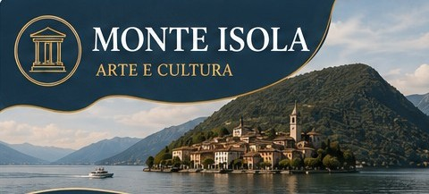
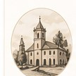
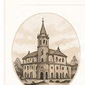
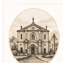

I tesori d'arte di Monte Isola

SANTUARIO DELLA MADONNA DELLA CERIOLA DA NON PERDERE
Località Ceriola
Santuario seicentesco in posizione panoramica a 600 metri, punto più alto dell'isola. Simbolo spirituale e meta di pellegrinaggi, con vista mozzafiato sul lago e sui borghi.
Santuario
Arte sacra
Vista panoramica

CHIESA DI SAN MICHELE ARCANGELO
Peschiera Maraglio
Chiesa seicentesca nel cuore di Peschiera Maraglio, con stucchi e affreschi che impreziosiscono l'unica navata.
Affreschi
Arte sacra
Storia locale

MUSEO DELLA RETE
Peschiera Maraglio
Museo privato allestito nell'antica fabbrica di reti dell'isola, che racconta attraverso attrezzi e testimonianze la tradizione della pesca a Monte Isola.
Tradizioni
Esposizioni
Memoria storica
PERCHÉ SCEGLIERE MONTE ISOLA
Spiritualità e natura
Tradizioni autentiche
Borghi caratteristici
Vista unica sul lago
Esperienze locali
Scopri l'arte e la cultura di Monte Isola
SCOPRI DI PIÙ


.jpg?width=600)
.jpg?width=600)